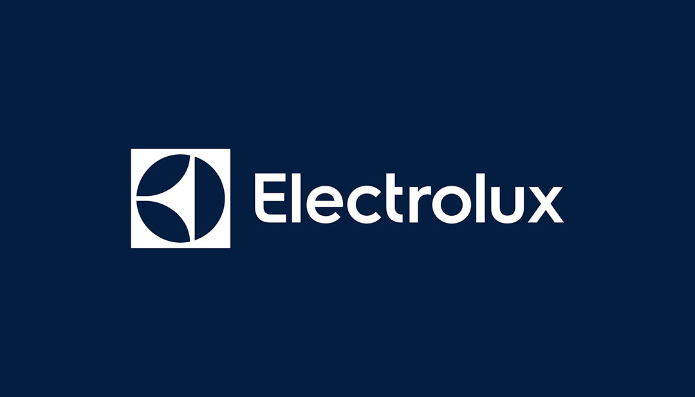
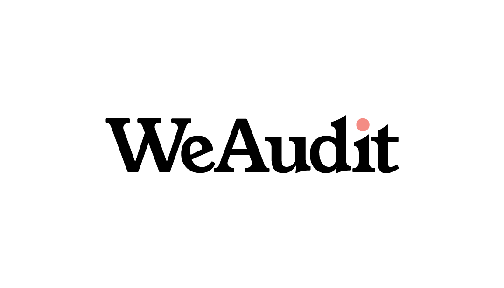
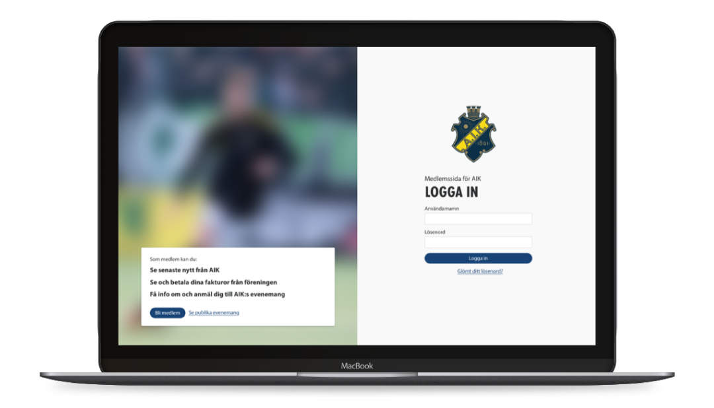

Case studies
-  Electrolux: food services in 2026
User Experience -  We Audit
Brand strategy -  Föreningshuset Unleash
Design system
Other work
- ECPAT Challenge
UX + Front-end developmentTogether with Novium Design I helped ECPAT create a digital campaign and associated website to increase awareness about exploitation of children.
- Hubbster
UX + Front-end developmentBetween 2016 and 2018 I helped Hubbster with design and front-end development of their web platform that encourages bottom-up strategy activation within organizations.
- YouMe
Wireframes, prototyping and front-end developmentI helped the startup Brain Space wireframe and prototype early versions of their app YouMe for internal testing. I also helped them with front-end development of the app to both Android and iOS using Angular and Ionic Framework.
- Medon
Between 2015 and 2017 I worked with Medon in Oslo helping them increase their capabilities within design and web development. During my time their I designed and developed a bike pickup app for use in the skiing and adventure resort Trysil (developed with Angular and Ionic Framework), as well as helping the brewery Ringnes with content strategy for moving over to their new international website platform and CMS provided by Carlsberg.
- Färgsätt
Personal projectA simple list of my favorite colors from earlier projects.